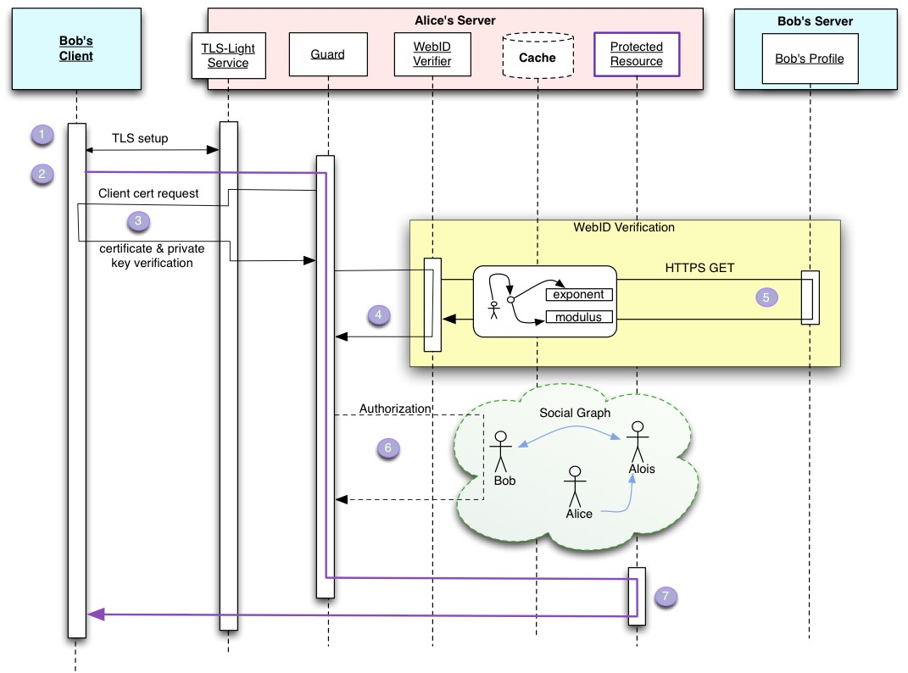

<!DOCTYPE html>
<html lang="en">
	<head>
		<meta charset="UTF-8" />
		
		<title>WebID provider using Node.JS</title>
		
		<meta name="author" lang="en" content="Baptiste LAFONTAINE" />
		<meta name="author" lang="en" content="Julie GARRONE" />
		
		<!-- Loading jquery -->
		<script type="text/javascript" src="js/jquery-1.7.1.min.js"></script>
		<!-- Jquery plugins -->
		<script type="text/javascript" src="js/jquery.cookie.js"></script>
		
		<!-- Load own Javascript -->
		<script type="text/javascript" src="js/matchMedia.js"></script>
		<script type="text/javascript" src="js/toc.js"></script> 
		<script type="text/javascript" src="js/sidenotes.js"></script> 
		<script type="text/javascript" src="js/references.js"></script>
		<script type="text/javascript" src="js/autoColorTab.js"></script>
		<script type="text/javascript">
			 $(document).ready(function() {
				setTimeout(function() {
									generateTOC();
									generateSideNotes();
									generateReference();
									autoColorTab();
				} , 100);
				// Timeout to fix some issues
			 });
		</script>
		
		<!-- Own style -->
		<link href="css/style.css" rel="stylesheet" type="text/css" media="all" />
		<link href="css/print.css" rel="stylesheet" type="text/css" media="print" />
		
	</head>
	<body>
		<div id="work">This is currently a work in progress. Feel free to <a href="https://github.com/magnetik/node-webid-report/issues">open an issue</a> or <a href="https://github.com/magnetik/node-webid-report">fork and do a pull request</a> to help!</div> 
		<div id="license"><a rel="license" href="http://creativecommons.org/licenses/by-sa/3.0/" target="_blank"></a></div>
		<div id="warning">This document looks better online @ <a href="http://magnetik.github.com/node-webid-report/">http://magnetik.github.com/node-webid-report/</a>.</div>
		<div id="page">
			<div id="first">
				<div id="top">
					<p id="left"></p>
					<p class="right">Julie Garrone<br />Baptiste Lafontaine<p>
					<hr class="clear" />
				</div>
				<div id="middle">WebID provider using Node.JS</div>
				<div id="bottom">
					<p class="right"><em>Supervisors:</em><br />Olivier Berger<br />Andrei Sambra<p>
				</div>
			</div>
			<div id="toc">
				
				<p id="tocTitle">Table Of Contents</p>
				<div id="tocContent"><!-- Automatically filled-in with TOC (see js/toc.js) --></div>
			</div>
			<hr />
			<h1>Introduction</h1>
				<p>People are using login and password to register and identify themselves on Internet for many years, but is it the best solution? Large companies, such as Google, are looking for better and more secure ways to identify an user (two steps login for instance).</p>
				<p>Aren't you tired of remembering long and complicated password (or worst, you are using the same password everywhere)? To enter your name and address every time you want to join a website?</p>
				<p>Moreover do you trust multinational companies to hold all your personal data? No? Then...</p>
				<p><strong>Then you should be in love with WebID!</strong></p>
				<p>The WebID protocol provides a way to identify an user without the need of the couple username/password. In addition, the user is in control of his data because it can store it anywhere he wants.</p>
				<p>This protocol could be part of the solution of the current issue of the <em>distributed social networks</em>. The idea developed here is to enable people to control the access of their own information by having their own server which contains all their own data. Therefore the social network has no more control on your data.</p>
				<figure>
					<!-- TO DO schéma à refaire -->
					
					<figcaption>Architectures of a traditionnal social network (as Facebook) and a distributed social network (like for example Diaspora). </figcaption>
				</figure>
				<h2>Subject</h2>			
					<p>The initial subject, available <a href="http://www-inf.it-sudparis.eu/COURS/ASR/projets/sujet_OlivierBerger_AndreiSambra.pdf">here</a> (document furnished in French), expressed two guidelines to follow:</p>
					<ul>
						<li>Do a WebID identity provider ;</li>
						<li>This provider had to be portable</li>
					</ul>
					<p>After a discussing the subject, doing a state of the art of WebID technology is part of our work too.</p>
			<h1>Domain analysis</h1>
				<h2>WebID</h2>
					<div class="disclaimer">Disclaimer: the following describes WebID in its "<a href="http://www.w3.org/2005/Incubator/webid/spec/drafts/ED-webid-20111212">W3C Editor's Draft 12 December 2011</a>" <span class="ref">Henry Story et al., <em>WebID 1.0</em>, [Online]. Available: http://www.w3.org/2005/Incubator/webid/spec/</span> version. It may have changed since; the latest version is available on <a href="http://www.w3.org/2005/Incubator/webid/spec/" target="_blank">W3C website</a>.</div>

					<p>A WebID <span class="ref">,<em>WebIDs and the WebID Protocol</em> [Online]. Available: http://www.w3.org/wiki/WebID</span> is a way to uniquely identify a person, company, organization, or other agent using a URI. The term "WebID" was coined by Dan Brickley and Tim Berners-Lee in 2000.</p>
					<p>The WebID Protocol authenticates a digital identity by allowing an Agent (e.g., a Web Browser) to prove possession of or access to a private key, whose corresponding public key is tightly bound to this WebID. The private key is usually associated with a "certificate" on the user's computer, while the public key and WebID are defined in the FOAF file of the subject and described by a URI in the certificate.</p>

					<p>In order to give the full context of a Client interaction with a Server we will illustrate the protocol with the following sequence diagram.</p>
						<figure>
							
							<figcaption>In this figure Bob initiates a connection to Alice's server in order to access a protected resource.</figcaption>
						</figure>
						<!-- TO DO finir -->
						<ol>
							<li>Initialization of the TLS Connection 
								<ul>
									<li>This is the first part of the HTTPS process. At this stage, the client identify the server, but the server does not know the client.</li>
								</ul></li>
							<li>Connection at the Application Layer 
								<ul>
									<li>An agent, usually on the Server, called the guard is responsible for looking at a request from the Client and decide if it needs authentication.</li>
								</ul></li>
							<li>Request of the Client Certificate
								<ul>
									<li>The guard requests of the TLS agent that it make a <em>certificate request</em> to the client.</li>
									<li>The client asks Bob to choose a certificate.</li>
									<li>The TLS agent verifies that the client is indeed in possession of the private key contains in the certificate chosen and its validity.</li>
									<li>Then the TLS agent passes the certificate to the guard.</li>
								</ul></li>
							<li>Verification of the WebIDs
								<ul>
									<li>The Guard asks the verification agent to perform the WebID part of the authentication.</li>
								</ul></li>
							<li>Extraction of Bob's public key
								<ul>
									<li>The verification agent extracts the public key and the URI entries (which are called WebIDs) contained in the <em>Subject Alternative Name</em> field of the certificate.</li>
									<li>The verification agent download the file identified by the URI (start with one entry, and can continue with another is an error occur.</li>
									<li>The verification agent compare the public key in the downloaded file with the public key of the profile. If it's the same, the client is identified !</li>
								</ul></li>
							<li>Checking of the access control rules (the exact nature of those Access Control Rules is left for another specification)</li>
							<li>Access to the protected resource</li>
						</ol>
					
					<h3>More than authentication</h3>
						<p>Because WebID uses a RDF file to store information about the user, it can handle any RDF informations.</p>
						<p>For now, FOAF file seems to be the best choice because it can contains every data to identify a person, but we can imagine other application specific data</p>
						
					<h3>SSL/TLS security protocol</h3>
						<p>WebID uses TLS protocol in order to verify both server and client.</p>
						<p>Transport Layer Security (TLS) <span class="ref">T. Dierks, E. Rescorla,<em>The Transport Layer Security (TLS) Protocol, Version 1.2</em>, August 2008; http://www.w3.org/wiki/WebID</span> and its predecessor, Secure Sockets Layer (SSL), are cryptographic protocols that provide communication security over the Internet.</p>
						<p>The TLS protocol allows client/server applications to communicate across a network in a way designed to prevent eavesdropping and tampering. The goals of the TLS protocol is to provide: cryptographic security, interoperability, extensibility, relative efficiency. Therefore it provides these different security aspects:</p>
						<ul>
							<li>The authentication of the server</li>
							<li>An encrypted session which allows secure data transmission</li>
							<li>The integrity of exchanged data</li>
							<li><sontrg>The use of a certificate to authenticate the client</strong></li>
							<li>The transparency of the connection for the client</li>
							<li>The transparency for the http protocol (allows the same query in https than in http)</li>
						</ul>
						<p>In the WebID protocol, the client must have a X509 certificate<span class="ref">R. Housley et al., <em>Internet X.509 Public Key Infrastructure</em>, IETF RFC 5280, May 2008; http://www.ietf.org/rfc/rfc5280.txt</span> with a subject alternative name URI entry that dereferences to a document which contains the public key for that certificate.</p>
						<figure>
							
							<figcaption>Example of X509 certificate used in WebID protocol. We can see the "Subject Alternative Name" field as well as the public key.</figcaption>
						</figure>
						<p>For now, one of the main critic is that TLS on server side is required to use WebID. Although it is a problem for now, there are more and more people believing that the web will be turned into "HTTPS only" soon <span class="ref">,<em></em> [Online]. Available: http://vitobotta.com/why-isnt-ssl-on-by-default-for-all-websites/</span>. For instance, Google or Facebook are now available in "SSL only" mode.</p>

					<h3><abbr title="Friend Of A Friend">FOAF</abbr> ontology</h3>
						<p><a href="http://xmlns.com/foaf/spec/" target="_blank">FOAF</a> is a machine-readable ontology based on the <a href="http://www.w3.org/RDF/">Resource Description Framework</a> (RDF) and describing persons, their activities and their relations to other people and objects. Indeed FOAF allows groups of people to describe social networks without the need for a centralised database: all the relations between people are described in FOAF files.</p>
						<figure>
							
							<figcaption>Graph of FOAF ontology. An user can fill in all informations and only some of it. </figcaption>
						</figure>
						<p>The FOAF Ontology is used in the WebID protocol with accordance to the following graph :</p>
						<figure>
							
							<figcaption>Graph of a FOAF profile in WebID</figcaption>
						</figure>
						<p>In this graph the uri <em>https://bob.example/profile#me</em> links to the FOAF file which describe Bob profile. </p>
						<!-- TO DO compléter -->
						
						
					<h3>Requirements</h3>
						<p>Despite the fact the client part of WebID is based on the quite old TLS client certificate, this may require some browser improvement in order to be more widely used.</p>
						<p>In appendix 1, you can found screen capture of user certificate selection. Firefox is giving the most unreadable window with a lot of informations that are not very useful for the user, whereas Internet Explorer is showing a pretty nice window. Even if it looks like a detail, it's important to be used by the mass.</p>
						<p>Another requirement is ways for the website to interact with the browser TLS stack. There is no clear standard of what is possible: for instance it's currently possible to logout from WebID with Firefox but not with Chrome. There is an HTML5 related group, the <a href="http://www.w3.org/community/webcryptoapi/" target="_blank">Web Crypto API</a> community group which is working on this issue in order to give a standards. Results of this group will be decisive for WebID.</p>
						
					<h3>Comparison</h3>
						<p>There are a few other ways to simplify and improve user login, some are standardized, some aren't.</p>
						<table>
							<caption>Matrix showing main differences / similarities between main identification standards</caption>
							<tr>
								<td></td>
								<th>WebID</th>
								<th>BrowserID</th>
								<th>OpenID</th>
							</tr>
							<tr>
								<th>Browser integration</th>
								<td>Already</td>
								<td>No</td>
								<td>Not required</td>
							</tr>
							<tr>
								<th>Identifier</th>
								<td>URL</td>
								<td>E-mail</td>
								<td></td>
							</tr>
						</table>
						<p>By the way, WebID is not opposed to this login system. For instance, OpenID could be used with WebID </p>
						
					<h3>W3C</h3>
						<p>Getting the status of a <a href="http://www.w3.org/standards/about.html" target="_blank">W3C Recommendation</a> helps to <q cite="http://www.w3schools.com/web/web_standards.asp">make the web a better place</q> by allowing both developers and users to have a better web experience. During one year from January 2011, WebID was developed through a W3C <a href="http://www.w3.org/2005/Incubator/webid/" target="_blank">Incubator Group</a> (XG) which is usually (but not mandatory) the first step in the recommendation redaction process. Members of Incubator Groups are authorized to use W3C infrastructures (such as mailing-list, wiki, bug tracker, ...) and permits to gather experts and every people interested in a technology in one location. It's a process open to anyone, for free; but because the process is based on consensus, it's quite hard to make decision with large number of people.</p>
						<p>Most of discussions are made through the <a href="http://lists.w3.org/Archives/Public/public-xg-webid/" target="_blank">public-xg-webid@w3.org</a> <span title="from October 2011 to January 2012, in average more than 400 e-mails are exchanged each month">mailing list</span>. There are also Teleconference meetings (accessible by phone, <span title="Session Initiation Protocol: Voice over IP equivalent">SIP</span>, IRC...) every month which permits do decide what to focus on during the following weeks.<p>
						<p>On January 2012, WebID XG was turned into a <a href="http://www.w3.org/community">Community Group</a> (CG). It's not any kind of evolution but the W3C is progressively deleting the concept of XG to CG.</p>
						<p>After a chair request, the group can be moved to the <q cite="http://www.w3.org/community/about/agreements/">W3C Standards Track</q>: it will be turned into a Working Group (WG). Because subscription to WG are not open: there are two way to join them: </p>
						<ul>
							<li>Be an employee of a <a href="http://www.w3.org/Consortium/Member/List" target="_blank">W3C Member organization</a>  and ask to join (Firms have to pay a fee to be member),
							<li>Be an <a href="http://www.w3.org/2004/08/invexp.html" target="_blank">invited expert</a>. 
						</ul>
						<p>When reaching the recommendation track, the work is far from done. The recommendation will pass theses steps <span class="ref">Dan Burnett, <em>W3C Recommendation Track</em> [Online]. Available: http://www.w3.org/2011/04/webrtc/wiki/images/5/5c/Webrtc_w3c_rec_track.pdf</span>:</p>
						<ol>
							<li>Working Draft (WD): published as often as possible,</li>
							<li>Last Call Working Draft (LC): the document is technically complete,</li>
							<li>Candidate Recommendation (CR): the document is considered as stable,</li>
							<li>Proposed Recommendation (PR),</li>
							<li>W3C Recommendation (REC)</li>
						</ol>
						<p>For some standards it can take years to complete this procedure. That's why it's important to have working implementation as soon as possible, even if the recommendation is not complete, is order to spread the standard.</p>
						<p>At least before publishing the <em>Candidate recommendation</em>, a test suite shoud be available allowing people doing the implementation to clearly know if their implementation is correct or not. As of January 2012, there is no complete test suite for WebID which leads to problem such as simple implementation considerate that a WebID profile is correct and some considerate that there is a problem.</p>
				
				<!-- ~~~~~~~~~~~~~~~~~~~~~~~~~~~~~~~~~~~~~~~~~~~~~~~~~~~~ -->
				<h2>EARL</h2>
					<p>EARL is an acronym for Evaluation and Report Language. It's a RDF vocabulary defined in a in-development W3C Recommendation (currently in the Last Call process)<span class="ref">Shadi Abou-Zahra, Shawn Lawton Henry et al, <em>EARL Overview</em>, [Online]. Available: http://www.w3.org/WAI/intro/earl</span> which provide a way to express tests results in machine-readable format.</p>
					<p>Storing test result in EARL permits to 
					<h3>EARL + WebID</h3>
						<p>An EARL vocabulary is currently developed within the WebID group in order to formalize a number of tests that <em>must</em> be done in order to verify a WebID identify. The <a href="http://www.w3.org/2005/Incubator/webid/earl/RelyingParty.n3" target="_blank">complete ontology</a> currently provides more than twenty tests.</p>
						<p>Some examples of the tests<span class="ref">Henry Story, <em>Document describing a vocabulary to allow a RelyingParty to make a report on an attempt at a WebID authentication.</em> [Online]. Available: http://www.w3.org/2005/Incubator/webid/earl/RelyingParty.n3</span>:</p>
						<ul>
							<li>Does the client certificate contain a subject alternative name?</li>
							<li>Is the profile well formed?</li>
							<li>Does the profile contain only well formed keys for that WebID?</li>
							<li>...</li>
						</ul>
						<p>An example of result, in <a href="http://en.wikipedia.org/wiki/Notation3">RDF serialization Notation3</a> could be :</p>
<pre>
[] a earl:Assertion;
	earl:subject _:certificate;
	earl:test wit:certificateProvidedSAN;
	earl:result [ a earl:TestResult;
		dct:description "";
		earl:outcome earl:passed;
</pre>
						<p>We can see an RDF blank node representing an EARL assertion. This assertion has a subject, a test and a result. The subject is the certificate, the test is "is there any Subject Alternative Name (SAN) in this certificate?". The result is another anonymous node with the outcome set to "passed", so we know that this test has been passed successfully.</p>
						<figure>
								
								<figcaption>How the test suite work: by sending predefined valid or invalid certificate, the test suite can test specific aspects of the WebID process. The endpoint have to reply an EARL formated answer in order to tell what went wrong during the process.</figcaption>
							</figure>
						<p>A Java test-suite is currently developed to help developers to test their WebID endpoint by sending corrupted certificate or miss conceived RDF. For that purpose, the endpoint must reply with an EARL (RDF) document showing what errors/success it has found.</p>
						<p>It's a very important part of the work of the community group which will be decisive.</p>
					
				<!-- ~~~~~~~~~~~~~~~~~~~~~~~~~~~~~~~~~~~~~~~~~~~~~~~~~~~~ -->
				<h2>Node.js</h2>
					<p><a href="http://www.nodejs.org" target="_blank">Node.js</a> (Node) is a software system which aims to produce <strong>highly scalable application</strong>. Programs are written in <span title="ECMAScript - ECMA-262, 5th edition">JavaScript</span>. Node is built ontop of google's <a href="http://code.google.com/p/v8/" target="_blank">V8 engine</a> which is the open source JavaScript engine used for instance in Google Chrome; it currently offers the best performance.</p>
					<p>To be highly scalable, Node uses <strong>event based</strong> programmings.</p>
					<figure>
						
						<figcaption>This image shows a single thread: when a client is connected, the thread is blocked (represented in red) while the final result is not ready. Thus, Apache thread is blocked waiting (doing nothing) during long I/O operations such as writing to disk or database.</figcaption>
					</figure>
					<p>Traditional servers such as Apache spawns a new thread (or uses one of a pool) to handle each request. This thread will be used only for this request as long as the whole process is not finished. If other request arrive, they are put in the queue waiting for the thread to be avaiable.</p>
					<p>This approach does not provide good performance because of the memory cost of thread (or process) management. In order to scale well, this kind of server must uses lot of threads. But large numbers of threads leads to overloading the machine and synchronization problems.</p>
					<figure>
						
						<figcaption>Node runs user's code in a loop called the event loop. Long operation are defferend to workers. Inspired from <span class="ref">Mixu, <em>Intro to Node.JS for .NET Developers</em>, [Online]. Available: http://www.aaronstannard.com/post/2011/12/14/Intro-to-NodeJS-for-NET-Developers.aspx</span></figcaption>
					</figure>
					<p>Node works differently: it uses mainly an event loop that execute your code in a single thread. This loop handle all incoming connections, that's why potentially long operations (such as network or disk I/O, database queries, etc) must be executed asynchronously (with the use of callback) on workers threads.</p>
					<p>In order to defer long operation to other thread, Node supports the brand new <a href="http://dev.w3.org/html5/workers/" target="_blank">HTML5 Web Workers</a> to delegate work to other threads.</p>
					<p>Many features of JavaScript helps to do event-driven programs effectively (with a minimum of line of code). Moreover, the way that Node is coded allows to do painlessly: there is no thread management nor synchronization functions...</p>
					<p>Node is under heavy development: cores <abbr title="Application Programming Interface">API</abbr>s may change at any time. It could be even a an advantage or a problem. An advantage because if bugs are found or new features requested, development teams can react quickly. But it is also a problem when, for example, the number of arguments of a function change from a version to another: it may require additional work to follow Node's quick development.</p>
					<p><a href="http://npmjs.org" target="_blank">npm</a> is Node's package manager which permits to install packages (with the additional possibility to add your own c++ wrappers if needed), and even to publish your own package on a centralized platform. On January 7<sup>th</sup> 2012, there are more than six thousand package available which are covering a wide range of functionalities such as template engines, web pages parsing, certificate management... Anyone wan publish a package to npm registry with only a few lines.</p>
			
				<!-- ~~~~~~~~~~~~~~~~~~~~~~~~~~~~~~~~~~~~~~~~~~~~~~~~~~~~ -->
				<h2>Related technologies</h2>
					<p>We also studied different aspects of the distributed social networks  that will finally not be implement in our project. Nevertheless this related technologies could be add to the project in the future into develop or improve it.</p>
					
					<h3>Port of Node.js on Android OS</h3>
						<p>We studied the way to make the webID protocol the more portable it can. The solution we found was to put the server that contains the FOAF file on a smartphone.</p>
						<figure>
						
						<figcaption>Proposition of a WebID architecture with a server running on a smartphone</figcaption>
					</figure>
						<p>Nevertheless for the moment Node.js is not port on Android OS, there only is an attempt is in development <a href="https://github.com/paddybyers/anode">here</a> on GitHub.</p>
					
					<h3>Access control</h3>	
						<p>As seen in the WebID authentication sequence, the access control can be treated during the sixth step. We thus tried to find an ontology to be able to control the access to the data on your FOAF file.</p>
						<p>There are lots of ontologies proposed to do the access control: </p>
						<ul>
							<li><a href="http://www.w3.org/wiki/WebAccessControl">Web Access Control</a>:  a decentralized system for allowing different users and groups various forms of access to resources where users and groups are identified by HTTP URIs and uses WebID authentication.</li>
							<li><a href="http://www.w3.org/2001/04/ACLS/Schema">ACL Schema</a>: </li>
							<!--...?-->
							<li><a href="http://ns.bergnet.org/tac/0.1/triple-access-control#">Triple Access Control</a>: </li>
						</ul>
						<p></p>
						
			<!-- ~~~~~~~~~~~~~~~~~~~~~~~~~~~~~~~~~~~~~~~~~~~~~~~~~~~~ -->
			<h1>Project</h1>
				<h2>Organization / Tools</h2>
					<p>We have chosen to use the platform <a href="http://www.github.com" target="_blank">GitHub</a> to store our code because of three main reasons:</p>
					<ul>
						<li>The revision control system <a href="http://git-scm.com/" target="_blank">Git</a> is more and more used.</li>
						<li>Our aim is to encourage re-usability of our code: GitHub allows anybody to contribute by proposing addition or correction. Moreover it gives a good visibility on our work.</li>
						<li>GitHub is the official forge of Node.js and almost all npm packages are using GitHub. Being on the same platform allows us to quickly post bug report and follow related projects.</li>
					</ul>
					<p>For intern communication, we used a wiki (powered by <a href="http://www.dokuwiki.org" target="_blank">dokuwiki</a>, hosted on a personal server, <a href="http://wiki.magnetik.org/projet_asr" target="_blank">available here</a>) to share the minutes of ours meetings, important links about our research, etc. </p>
					<p>To generate our modules documentation, we used the <a href="http://code.google.com/p/jsdoc-toolkit/" target="_blank">JSDoc toolkit</a>. It uses in-line annotation (mostly the same as <a href="http://www.oracle.com/technetwork/java/javase/documentation/index-jsp-135444.html" target="_blank">Javadoc</a>) within the code (such as @param to describe a function parameter) to create a user-friendly documentation. An example of HTML output can be found <a href="http://magnetik.github.com/node-earl/doc/symbols/EarlDocument.html" target="_blank">on github</a>.</p>
				<h2>Research on related technologies </h2>
					<p>Before starting to code, we had to make research on many subjects related to WebID that where totally unknown to us (RDF and its serialization RDF/XML and Turtle, <abbr title="Transport Security Layer">TLS</abbr>, X509 certificate, <abbr title="Friend of a Friend">FOAF</abbr>, ...).</p>
					<p>After having a good comprehension of theses technologies and noticing that there wasn't much informations in our native language (French), we created a few articles on Wikipedia to help spreading thoses technologies:</p>
					<ul>
						<li><a href="http://fr.wikipedia.org/wiki/WebID#Protocole_WebID" target="_blank">WebID</a>,</li>
						<li><a href="http://fr.wikipedia.org/wiki/Turtle_(syntaxe)" target="_blank">Turtle (syntaxe)</a>,</li>
						<li><a href="http://fr.wikipedia.org/wiki/Notation3" target="_blank">Notation3</a>,</li>
						<li><a href="http://fr.wikipedia.org/wiki/Evaluation_and_Report_Language" target="_blank">Evaluation and Report Language</a>.</li>
					</ul>
					<p>By writing small summaries of theses technologies and rephrasing already existing articles, this helped us to have a clearer view.</p>
				<p></p>
				<h2>Existent</h2>
					<p>We searched if other people have already done some work on WebID with Node. A Google research didn't gave any result, neither a search on GitHub, but someone mentioned an implementation on the WebID XG list. After contacting the author, <a href="http://antoniogarrote.wordpress.com/" target="_blank">Antonio Garrote</a>, he put <a href="https://github.com/antoniogarrote/NodeJS-WebID-demo" target="_blank">his code</a> on his <a href="https://github.com/antoniogarrote" target="_blank">GitHub account</a>. We have identified one main problem: the lack of RDF library in JavaScript.</p>
					<h3>JavaScript RDF lib</h3>
						<p>There are a few RDF libraries (in pure JavaScript or wrappers to other libs) available on the Internet. The following matrix shows RDF support for the main libraries.</p>
						<table>
							<caption>JavaScript RDF library support</caption>
							<tr>
								<td></td>
								<th><a href="http://code.google.com/p/rdfquery/" target="_blank">RDFQuery</a></th>
								<th><a href="http://www.jibbering.com/rdf-parser/" target="_blank">RDF parser</a></th>
								<th><a href="http://antoniogarrote.github.com/rdfstore-js/" target="_blank">rdfstore-js</a></th>
								<th><a href="https://github.com/linkeddata/rdflib.js" target="_blank">LinkedData RDFLib</a></th>
								<th><a href="https://github.com/antoniogarrote/rdf-raptor-node-js" target="_blank">Rdf raptor</a></th>
							</tr>
							<tr>
								<th>Last update</th>
								<td>2010</td>
								<td>2006</td>
								<td>2012</td>
								<td>2012</td>
								<td>2011</td>
							</tr>
							<tr>
								<th>Parse (and export) RDF/XML</th>
								<td>Yes</td>
								<td>Yes</td>
								<td>No</td>
								<td>Yes</td>
								<td>Yes</td>
							</tr>
							<tr>
								<th>Parse RDFa</th>
								<td>Yes</td>
								<td>Yes</td>
								<td>No</td>
								<td>Yes</td>
								<td>Yes</td>
							</tr>
							<tr>
								<th>Parse (and export) N3 (Turtle)</th>
								<td>Yes</td>
								<td>Yes</td>
								<td>Yes</td>
								<td>Yes</td>
								<td>Yes</td>
							</tr>
							<tr>
								<th>SparQL (1.0) support</th>
								<td>Yes</td>
								<td>No</td>
								<td>Yes</td>
								<td>Yes</td>
								<td>No</td>
							</tr>
							<tr>
								<th>Parallel execution</th>
								<td>No</td>
								<td>No</td>
								<td><strong>Yes</strong></td>
								<td>No</td>
								<td>Yes</td>
							<tr>
								<th>Requirement</th>
								<td>jQuery</td>
								<td>/</td>
								<td>Node</td>
								<td>/</td>
								<td>libraptor v1.4</td>
							</tr>
						</table>
						<p>Even if it looks like that there are many libraries, many can be eliminated. RDFQuery is a <a href="http://jquery.com/" target="_blank">jQuery</a> plugin, and for now jQuery plugins are not compatible with Node (even if some project such as <a href="https://github.com/tmpvar/jsdom" target="_blank">jsdom</a> aims to implement the <abbr title="Document Object Model">DOM</abbr>, which is required by jQuery, to node.). RDF parser does not support SparQL which is required to verify the public key.</p>
						<p>We have seen in the context that Node.js application have to do the least number of operation in the main thread. As a matter of fact the support of WebWorkers of <strong>rdfstore-js</strong> was decisive even if it does not support RDF/XML. Moreover this module is under development and RDF/XML could be implemented in a near future.</p>
						<p>Because most profile on internet are in RDF/XML, we used a <span title="http://semola-rdf.appspot.com">web service</span> that translate RDF/XML to Turtle.</p>
				<h2>Programming</h2>
					<p>We started working with Node.Js 0.5.10 which didn't had the <em>Subject Alternative Name</em> available in the certificate. After a <a href="https://github.com/joyent/node/pull/1286">bug request</a> this as been added to Node for the 0.6.0 beta version.</p>
					<p>In order to clearly seperate our different modules, we creates four different github repositories:</p>
					<ul>
						<li><a href="https://github.com/magnetik/node-webid" target="_blank">node-webid</a>: contains the core WebID implementation.</li>
						<li><a href="https://github.com/magnetik/node-webid-demo" target="_blank">node-webid-demo</a>: contains a demo of our implementation</li>
						<li><a href="https://github.com/magnetik/passport-webid" target="_blank">passport-webid</a>: contains an implementation of WebID login with the <a href="http://passportjs.org/" target="_blank">passport framework</a>.</li>
						<li><a href="https://github.com/magnetik/node-earl" target="_blank">node-earl</a></li>
					</ul>
					<h3>node-webid</h3>
						<p>This is our core implementation. It tries to follow the </p>
						<p>Our public API is simple, example of basic usage:</p>
						
<!-- ~~~~~~~~~~~~~~~~~~~~~~~~~~~~~~~~~~~~~~~~~~~~~~~~~~~~~~~~~~~~~~~~~~~~~~~~
     START CODE COLORATION:
	 http://www.howtocreate.co.uk/tutorials/jsexamples/syntax/
	 ~~~~~~~~~~~~~~~~~~~~~~~~~~~~~~~~~~~~~~~~~~~~~~~~~~~~~~~~~~~~~~~~~~~~~~~~ -->
<pre><span class="oper">var</span> <span class="var">certificate</span> <span class="oper">=</span> <span class="var">req</span>.<span class="var">connection</span>.<span class="func">getPeerCertificate</span>();
<span class="comment">// Get the CLIENT certificate. In most language, getting this information is as simple</span>
<span class="comment">// as a method call.</span>
<span class="oper">if</span> (<span class="oper">!</span><span class="var">_</span>.<span class="func">isEmpty</span>(<span class="var">certificate</span>)) {
  <span class="comment">// The client can decline the demand of the certificate, so the vaiable certificate is empty</span>
  <span class="comment">// in this case, we can't continue the process.</span>
  <span class="oper">var</span> <span class="var">verifAgent</span> <span class="oper">=</span> <span class="oper">new</span> <span class="var">webid</span>.<span class="func">VerificationAgent</span>(<span class="var">certificate</span>);
  <span class="comment">// Initialize our WebID framework</span>
  <span class="comment">// It basically doesn't do anything </span>
  <span class="comment">// We can notice that the only input used to validate a WebID is the certificate</span>
  <span class="var">verifAgent</span>.<span class="func">verify</span>(<span class="oper">function</span> (<span class="var">success</span>, <span class="var">result</span>) {
    <span class="comment">// The verify method do the whole process</span>
    <span class="comment">// - Getting the file located at Subject Alternative Name</span>
    <span class="comment">// - Getting the public key in this file (exponent and modulus)</span>
    <span class="comment">// - Verifying if this public key equals the key of the certificate</span>
    <span class="comment">// Call the callback</span>
    <span class="oper">if</span> (<span class="var">success</span>) {
      <span class="comment">// In case of success, the 'result' variable contain the complete RDF Profile</span>
      <span class="oper">var</span> <span class="var">foaf</span> <span class="oper">=</span> <span class="oper">new</span> <span class="var">webid</span>.<span class="func">Foaf</span>(<span class="var">result</span>);
      <span class="oper">var</span> <span class="var">foafFile</span> <span class="oper">=</span> <span class="var">foaf</span>.<span class="func">parse</span>();
      <span class="comment">// Another function of our module is to parse the FOAF</span>
      <span class="comment">// then a few variable are available, such as :</span>
      <span class="comment">// - foafFile.name: contain the name</span>
	  <span class="comment">// - foafFile.knows: contain known people</span>
    } <span class="oper">else</span> {
      <span class="comment">// There has been an error during the process</span>
      <span class="comment">// OR</span>
      <span class="comment">// The profile is not valid !</span>
    }

  });</pre>
<!-- ~~~~~~~~~~~~~~~~~~~~~~~~~~~~~~~~~~~~~~~~~~~~~~~~~~~~~~~~~~~~~~~~~~~~~~~~
     END CODE COLORATION
	 ~~~~~~~~~~~~~~~~~~~~~~~~~~~~~~~~~~~~~~~~~~~~~~~~~~~~~~~~~~~~~~~~~~~~~~~~ -->
						<p>We can see that adding WebID login to a website is as easy as 10 lines of code: this is much more easier than OpenID for example. Otherwise it require the server to use TLS.</p>
						<p>We have published this module on npm (<a href="http://search.npmjs.org/#/webid">search.npmjs.org/#/webid</a>): developpers who wants to use our code, just have to type : <code>npm install webid</code>, and the library (and its dependencies) will be installed on their working directory. They can also declare WebID as a dependency of their own package.</p>
					<h3>node-webid-demo</h3>
					<h3>passport-webid</h3>
						<p>Almost all developpers using Node.js for web usage use the framework <a href="http://expressjs.com/" target="_blank">express</a> framework, or at least the middleware <a href="http://www.senchalabs.org/connect/" target="_blank">Connect</a>. Theses framework/middleware helps developers to program their application without worrying of their underlying consideration such as routes mapping, sessions etc.</p>
						<p>Passport is an identification middleware wich can be used with connect or express. It's designed to handle many "strategies",  from classic login/password, to OpenID, facebook connect, and now... WebID !</p>
						<p>Our module is now available as a passport strategy which means that anyone can use it with even less line of code that our "standard" example</p>
					<h3>node-earl</h3>
						<p>In order to implement EARL answer in our node-webid module, we created a module to help generating EARL report.</p>
						<p>Via a simple API, developers can generate EARL </p>
					<h3>Triple access control</h3>
						<p>We started to study the Triple Access Control ontology to implement a server that could serve a different FOAF file depending on who (or which server) is asking.</p>
						<p>With the RDF query in appendix 2, we can </p>

			<h1>Conclusion</h1>
				<h2>Issues</h2>
					<p>The main issue we had to face was the lack of good Node.js implementation for some standards: RDF and TLS. </p>
					<p>Following the very first steps of a new W3C recommendation was quite exciting but reading more than 400 messages per month was hard, that's why we didn't participate much in the discussions.</p>
			<h1>References</h1>
				<div id="listRef"><!-- Automatically filled-in with list of references (see js/references.js) --></div>
			<h1>About</h1>
				<p>This report is available under the Creative Common BY-SA 3.0 License. You are free to:</p>
				<ul>
					<li>Copy, distribute and transmit this document,</li>
					<li>Adapt and modify this document.</li>
				</ul>
				<p>Under theses conditions:</p>
				<ul>
					<li>You must attribute this work</li>
					<li>You distribute your modification under the same, or a similar, license.</li>
				</ul>
				<p>You can download it <a href="https://github.com/magnetik/node-webid-report/zipball/gh-pages">here</a></p>
				<p>It's made with HTML5 + CSS3 and JavaScript to generate some content.</p>
				<p><a href="http://validator.w3.org/check?uri=referer"></a> </p>
			<h1>Appendix</h2>
				<h2>User certificate selection</h2>
					<p>Theses are screen capture of certificate selection under the main mobile and desktop browsers</p>
					<figure>
						
						<figcaption>User certificate choice with Internet Explorer 9</figcaption>
					</figure>
					<figure>
						
						<figcaption>User certificate choice with Opera 11.60</figcaption>
					</figure>
					<figure>
						
						<figcaption>User certificate choice with Firefox 9</figcaption>
					</figure>
					<figure>
						
						<figcaption>User certificate choice with Chrome 17</figcaption>
					</figure>
				<h2>Triple access control query</h2>
<pre>
PREFIX rdf: &lt;http://www.w3.org/1999/02/22-rdf-syntax-ns#>
PREFIX foaf: &lt;http://xmlns.com/foaf/0.1/>
PREFIX acl: &lt;http://www.w3.org/ns/auth/acl#>
PREFIX tac: &lt;http://ns.bergnet.org/tac/0.1/triple-access-control#>
PREFIX src: &lt;file:/mci/ei0912/garrone/git/tac/src/data/testXML.rdf#>

CONSTRUCT {src:me ?predicate ?data}
  WHERE
    {
	  ?group foaf:name "example.com" .
	  ?tacAccess acl:agent ?group .
	  ?tacAccess tac:accessToTriple ?tripleAccessible .
	  ?tripleAccessible tac:mode ?mode .
	  ?tripleAccessible tac:filter ?tmpdata .
	{ ?tmpdata tac:predicate ?predicate . 
	  src:me ?predicate ?data .} 
	UNION 
	{ ?tmpdata tac:subject ?subject .
	  OPTIONAL { ?tmpdata tac:predicate ?p .}
	  FILTER ( !bound(?p) ) .
	  ?subject ?predicate ?data . }
}
</pre>
				<h2>Example of TAC annotated RDF file</h2>
<pre>
@prefix rdf: <http://www.w3.org/1999/02/22-rdf-syntax-ns#>.
@prefix acl: <http://www.w3.org/ns/auth/acl#>.
@prefix tac: <http://ns.bergnet.org/tac/0.1/triple-access-control#>.
@prefix foaf: <http://xmlns.com/foaf/0.1/>.
@prefix vcard: <http://www.w3.org/2006/vcard/ns#>.
@prefix mywebid: <http://www.example.tld/card#>.

# owner has full control
[] a acl:Authorization;
		tac:accessToTriple [ a tac:TripleAuthorization;
		tac:mode acl:Read;
		tac:mode acl:Write;
		tac:filter [ a tac:Filter;
			tac:subject mywebid:me ]];
	acl:agent mywebid:me.


# friends have read access to
#  the fullname, nickname and all telephone numbers
[] a acl:Authorization;
	tac:accessToTriple [ a tac:TripleAuthorization;
		tac:mode acl:Read;
		tac:filter [ a tac:Filter;
			tac:subject mywebid:me;
			tac:predicate vcard:fn ]
	], [
		tac:mode acl:Read;
		tac:filter [ a tac:Filter;
			tac:subject mywebid:me;
			tac:predicate vcard:nickname ]
	], [
		tac:mode acl:Read;
		tac:filter [ a tac:Filter;
			tac:subject mywebid:me;
			tac:predicate vcard:tel ];
		tac:children [	a acl:Authorization;
			tac:accessToTriple [ a tac:TripleAuthorization;
				tac:filter [ a tac:Filter;
					tac:predicate rdf:type ]
			], [
				tac:filter [ a tac:Filter;
					tac:predicate rdf:value ]]]];
	acl:agent _:friends.


# business contacts have read access
#  to the fullname and work telephone numbers
[] a acl:Authorization;
	tac:accessToTriple [ a tac:TripleAuthorization;
		tac:mode acl:Read;
		tac:filter [ a tac:Filter;
			tac:subject mywebid:me;
			tac:predicate vcard:fn ]
	], [
		tac:mode acl:Read;
		tac:filter [ a tac:Filter;
			tac:subject mywebid:me;
			tac:predicate vcard:tel ];
		tac:children [	a acl:Authorization;
			tac:accessToTriple [ a tac:TripleAuthorization;
				tac:filter [ a tac:Filter;
					tac:predicate rdf:type;
					tac:object vcard:Work ];
				tac:required "true"
 			], [
				tac:filter [
					tac:predicate rdf:type ]
 			], [
 				tac:filter [
 					rdf:predicate rdf:value ]]]];
 	acl:agent _:businessContacts.
 
 
# data
mywebid:me a foaf:Person;
	vcard:fn "John Doe";
	vcard:nickname "Johnny";
	vcard:tel [
		a vcard:Voice;
		a vcard:Home;
		rdf:value "+49 8765 4321"
	], [
		a vcard:Voice;
		a vcard:Work;
		rdf:value "+49 8765 5555" ].

# groups
_:friends a foaf:Group;
	foaf:name "list of friends".

_:businessContacts a foaf:Group;
 	foaf:name "business contacts".
</pre>
		</div>
	</body>
</html>
